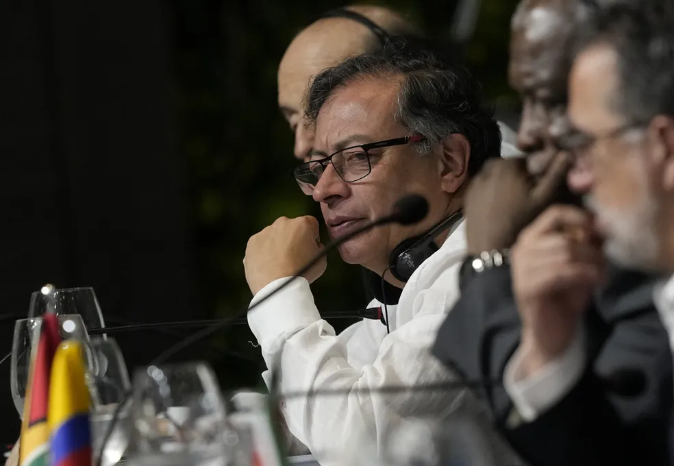

Equador: o resultado da votação histórica que impacta no futuro da exploração de petróleo na Amazônia

O presidente da Colômbia, Gustavo Petro, pediu o fim da exploração de petróleo na Amazônia ao discursar nesta terça-feira (8) durante uma reunião com o presidente Luiz Inácio Lula da Silva (PT) e outros líderes da região em Belém.
A Colômbia propôs que a "Declaração de Belém", lista de compromissos que os oito países amazônicos deverão assinar na Cúpula da Amazônia, inclua uma sinalização clara pelo fim da exploração de petróleo na região da floresta. Não há consenso, porém, motivo pelo qual o tema deve ficar de fora do documento.
"Os desacordos, às vezes, nos permitem algumas propostas novas também", afirmou Petro.
"A política não consegue se destacar dos interesses econômicos que derivam do capital fóssil. Por isso, a ciência se desespera, porque ela não está vinculada a esses interesses tanto quanto a política."
Ele acrescentou: "Cada vez mais, o movimento social se junta com a ciência. E a política, cada vez mais, está presa na retórica". O mandatário colombiano afirmou ainda que essa dissonância faz com que conferências internacionais do clima fracassem.
Petro classificou a exploração de petróleo na Amazônia como "sem sentido" e um "contrassenso" e pediu que decisões sejam tomadas. "Não vamos colocar na declaração [de Belém], mas vamos tomar decisões", disse.